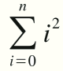

Programlama konusunda -hangi dil olursa olsun- en kritik yapılardan biri döngülerdir. Döngüler, bir işi, belirlediğiniz sayıda yapan kod blokları olarak düşünülebilir. Ekrana 10 kere "Merhaba Dünya" yazan bir programda, "Merhaba Dünya" yazdıran kodu aslında tek bir defa yazarsınız, döngü burada devreye girip, sizin için bu kodu istediğiniz sayıda tekrarlar.
Döngüleri bu kadar kritik yapan unsur; iyi yazılıp, optimize edilmediği takdirde, bilgisayarınızın işlem gücünü gereksiz yere tüketmesi ve harcanan zamanı arttırmasıdır. Benzer şekilde, iyi yazılmış bir döngü, programınızı hızlı çalıştıracaktır.
Bütün döngüler temelde iki aşamayla özetlenebilir. Aşamalardan biri, döngünün devam edip etmeyeceğine karar verilen mantıksal sorgu kısmıdır. Örneğin, ekrana 10 kere "Merhaba Dünya" yazdıracaksanız, kaçıncı seferde olduğunu, koşul kısmında kontrol edersiniz. Diğer aşama, döngünün ne yapacağını yazdığınız kısımdır. Yani ekrana "Merhaba Dünya" yazılması döngünün yapacağı iştir.
Döngünün devam edip etmeyeceğine karar verilen aşamada, hatalı bir mantık sınaması koyarsanız, ya programınız hiç çalışmaz ya da sonsuza kadar çalışabilir.
C programlama diline ait bazı döngüler; while, do while, for yapılarıdır. Bunlar dışında, goto döngü elemanı olmasına rağmen, kullanılması pek tavsiye edilmemektedir.
while döngüsü, en temel döngü tipimizdir. Bir kontrol ifadesiyle döngünün devam edilip edilmeyeceği kontrol edilirken, scope içinde ( yani ayraç işaretleri arasında ) kalan bütün alan işleme sokulur. İşleme sokulan kod kısmı döngü yapılacak adet kadar tekrar eder.
while döngüsünün genel yapısını ve akış şemasını aşağıda görebilirsiniz:
| while Yapısı | while Akış Diyagramı |
while( koşul ) {
komut(lar)
}
|
Yukarda 10 kere ekrana "Merhaba Dünya" yazan programdan bahsettik. Gelin bir anlaşma yapalım ve döngülerle alakalı bütün ilk örneklerimiz bu programın nasıl yazılacağını göstersin.
while döngüsü kullanarak, ekrana 10 kere "Merhaba Dünya" yazan program aşağıdaki gibidir:
/*
Ekrana 10 kere "Merhaba Dünya"
yazan program
*/
#include<stdio.h>
int main( void )
{
//i değişkenine bir başlangıç değeri atıyoruz.
//i'ye ilk deger atanmazsa, döngümüz yanlış çalışır.
int i = 0;
//i'nin degeri kontrol işleminden
//sonra 1 artar.
while( i++ < 10 ) {
//2d bir tam sayının yazdırılacağı
//ancak bu sayı tek rakamdan oluşsa da
//2 rakamlık yer ayırılmasını belirtir.
printf("%2d: Merhaba Dünya\n",i);
}
return 0;
}
Yukardaki program aslında son derece basit. i değişkenine ilk değer olarak 0 atıyoruz. Daha sonra, while döngüsüne başlıyoruz. İfadenin doğruluğu ( yani i'nin 10'dan küçük olup olmadığı) kontrol ediliyor. Eğer doğruysa, döngü içindeki kodların çalışması başlatılıyor. Elbette kodların başlamasından bir önceki adımda, i değişkeni arttırılıyor. ( Önceki derste anlatmış olduğumuz post-increment işlemini hatırlayın. ) Bu yapı toplamda 10 kere tekrar ediyor ve en sonunda i'nin degeri 10'a eşit olunca, döngü sonlandırılıyor.
|  | Yandaki işlem basit bir toplama ifadesidir. Yanda gördüğümüz ifade de, n değerini kullanıcıdan alacağımızı düşünerek bir program yazalım. Bu program, alacağı n değerine göre, kendisine kadar olan sayıların karelerinin toplamını gösterecektir. Bu programı yazarsak: |
#include<stdio.h>
int main( void )
{
int i = 0, toplam_deger = 0;
int n;
printf("Lütfen n değerini giriniz> ");
scanf("%d",&n);
while( i <= n ) {
toplam_deger += i*i;
i++;
}
printf("Sonuç: %d\n",toplam_deger);
return 0;
}
Göreceğimiz ikinci döngü çeşidi, do while döngüsüdür. Yaptığı iş, while ile hemen hemen aynıdır; verilen işi, döngü koşulu bozulana kadar sürdürür. Ancak while'a göre önemli bir farkı vardır.
while döngülerinde, döngü içersindeki işlem yapılmadan önce, sunulan koşul kontrol edilir. Şayet koşul sağlanmıyorsa, o while döngüsünün hiç çalışmama ihtimali de bulunmaktadır. do while döngülerindeyse, durum böyle değildir. İlk çalışmada koşul kontrolü yapılmaz. Dolayısıyla, her ne şartta olursa olsun, döngünüz -en azından bir kere- çalışacaktır.
Bazı durumlarda, döngü bloğu içersindeki kodların en azından bir kere çalışması gerektiğinden, do while yapısı kullanılır. do while ile ilgili genel yapıyı ve akış şemasını aşağıda bulabilirsiniz:
| do while Yapısı | do while Akış Diyagramı |
do {
komut(lar)
} while( koşul );
|
Önce Merhaba Dünya örneğimizi yapalım:
#include<stdio.h>
int main( void )
{
int i = 0;
do {
//Önce i'nin değeri arttırılıyor
//sonra ekrana Merhaba Dünya yazdırılıyor.
printf("%2d: Merhaba Dünya\n",++i);
} while( i < 10 );
return 0;
}
Gördüğünüz gibi, bir önceki örneğimize oldukça benzer bir yapıda, yazıldı. Tek fark i'nin değeri 0'da olsa, 1000'de olsa, en azından bir kez Merhaba Dünya'nın yazılacak olmasıdır. Ancak while'de kontrol önce yapıldığı için, hiçbir şey ekrana yazılmaz.
Şimdi do while'in kullanılmasının daha mantıklı olacağı bir program yapalım. Kullanıcıdan iki sayı alınsın. Bu iki sayı toplandıktan sonra, sonucu ekrana yazdırılsın. Yazdırma sonunda "Devam etmek istiyor musunuz?" sorusu sorulsun ve klavyeden 'E' veya 'e' karakterlerinden birisi girilirse, program devam etsin. Yok farklı birşey girilirse, program sonlandırılsın. Örnek programımızı aşağıda bulabilirsiniz:
#include<stdio.h>
int main( void )
{
int sayi_1, sayi_2;
char devam_mi;
do {
printf("Birinci sayıyı giriniz> ");
scanf("%d",&sayi_1);
printf("İkinci sayıyı giriniz> ");
scanf("%d",&sayi_2);
printf("%d + %d = %d\n", sayi_1, sayi_2, sayi_1 + sayi_2);
printf("Devam etmek ister misiniz? ");
//C'de tek karakter okuma işlemi biraz sıkıntılı
//olduğundan, burada da bir do while kullandık.
do {
scanf("%c",&devam_mi);
}while( devam_mi == '\n' );
printf("\n");
} while( devam_mi == 'E' || devam_mi == 'e' );
return 0;
}
Program, kullanıcıdan iki sayı alıp, toplamını ekrana bastıktan sonra, yeniden işlem yapıp yapmak istemediğimizi sormaktadır. Bu programı while ile de yazabilirdik. Ancak while ile yazabilmek için, devam_mi değişkenine önceden 'E' değerini atamamız gerekmekteydi. do while döngüsündeyse, bu zorunluluğa gerek kalmamıştır.
Not: Yukardaki programda, farketmiş olduğunuz gibi karakter okumayı biraz farklı yaptık. Normalde, scanf( ) fonksiyonunu kullanmak yeterliyken, burada, işin içine bir de, do while girdi. Açıklayacak olursak, C'de karakter okumaları, biraz sıkıntılıdır. Eğer giriş tampon belleğinde (Buffer) veri bulunuyorsa, bu direkt karaktere atanır. Bundan kurtulmak için birçok yöntem olduğu gibi, uygulanabilecek bir yöntem de, yukarda yazılmış olan döngü şeklinde değer almaktır. Çünkü siz daha bir şey girmeden, ilk değer '\n' geleceğinden, döngünün ikinci çalışmasında, doğru değer atanacaktır. İlerki konularda, daha detaylı ele alacağımız bir problem olarak şimdilik önemsemeyelim. Sadece karakter okuyacağınız zaman problem çıkarsa, yukardaki gibi bir yöntem uygulanabileceğini bilmeniz -şimdilik- yeterli.
while ve do while dışında, üçüncü bir döngü tipi olarak, for yapısı bulunmaktadır. Diğer iki döngüden farklı olarak, for yapısı, yenilemeli-tekrarlamalı (İngilizce iterative) yapılarda kullanıma daha uygundur. Bunu performans anlamında söylemiyorum. Demek istediğim yazım tekniği olarak, for döngüsünün daha kullanışlı olmasıdır. Örneğin birbirini, sürekli tekrar eden işlemlerin yapıldığı Nümerik Analiz gibi alanlar, for döngüsü için iyi bir örnek olabilir. Ancak bu dediklerim sizi yanıltmasın; for döngüsü sadece soyut alanlarda çalışsın diye yaratılmış bir şey değildir.
Programlarda, diğer iki döngüden çok daha fazla for kullanırsınız. Çünkü for sadece matematiksel hesaplama işlemlerinde değil, diziler ( array ) gibi konularda sürekli kullanılan bir yapıdır. Yazımı diğerlerine nazaran daha sade olduğundan, iteratif işlemlerde kullanılması elbette ki tesadüf olarak düşünülemez.
Aşağıda for döngüsünün genel yazımını ve akış diyagramını göreceksiniz:
| for Yapısı | for Akış Diyagramı |
for( ilk_deger_atama; koşul; arttırma/azaltma ){
komut(lar)
}
|
İlk atacağımız adım; elbette ki ekrana 10 kere "Merhaba Dünya" yazdırmak olacak. ( Umarım bu Merhaba Dünya'larla sizi fazla sıkıp, programlama işinden vazgeçirmemişimdir. Programlama mantığını kaptıktan sonra, dünyayı daha farklı görmeye başlayacak ve Merhaba Dünyalar'ın sebebini daha iyi anlayacaksınız. Ve inanın bütün bu eziyete değer... ) Buyrun programımız:
#include<stdio.h>
int main( void )
{
int i;
for( i = 0 ; i < 10; i++ ) {
printf("%2d: Merhaba Dünya\n",(i+1));
}
return 0;
}
Gördüğünüz gibi çok daha sade ve açık gözükür bir kod oldu. for altında tek satır komut olduğundan, küme parantezleri koymamız opsiyoneldi ama ne yaptığınızı karıştırmamak için, her zaman koymanızı öneririm.
for döngüleriyle ilgili bazı özel durumlarda vardır. for döngüsü içersine yazdığınız ilk değer atama, kontrol ve arttırma işlemlerini tanımlama esnasında yapmanız gerekmez. Aşağıda verilen kod, yukardakiyle tamamen aynı işi yapar. Farkı, i'nin daha önce tanımlanmış olması ve arttırma/azaltma işinin döngü içinde yapılmasıdır.
#include<stdio.h>
int main( void )
{
int i;
i = 0;
for( ; i < 10; ) {
printf("%2d: Merhaba Dünya\n",(i+1));
i = i + 1;
}
return 0;
}
Bazı durumlarda, döngüyü aniden sonlandırmak isteriz. Bunun için 'break' komutunu kullanırız. Döngüyü aniden sonlandırmak veya döngüyü kırmak işlemini, zaten daha önce switch case'lerde kullanmıştık. Bahsetmediğimiz şey, bunun her döngü içersinde kullanılabileceğiydi.
Aşağıdaki programı inceleyelim:
/*
0 ile 99 arasında tesadüfi sayılar üreten
bir programın, kaçıncı seferde 61 sayısını
bulacağını yazan program aşağıdadır.
*/
#include<stdio.h>
int main( void )
{
int i,tesadufi_sayi;
int deneme_sayisi = 0;
//while içinde 1 olduğundan sonsuza kadar döngü çalışır.
while( 1 ){
//tesadufi_sayi değişkenine, 0 ile 99 arasında
//her seferinde farklı bir sayı atanır.
//rand( ) fonksiyonu tesadüfi sayı atamaya yarar.
//mod 100 işlemiyse, atanacak sayının 0 ile 99
//arasında olmasını garantiler.
tesadufi_sayi = rand() % 100;
//Döngünün kaç defa çalıştığını deneme_sayisi
//değişkeniyle buluruz.
deneme_sayisi++;
//Eğer tesadufi sayı 61'e eşit olursa,
//döngü kırılıp, sonlandırılır.
if( tesadufi_sayi == 61 ) break;
}
printf("Toplam deneme sayısı: %d\n",deneme_sayisi);
return 0;
}
Program için koyulmuş açıklamalar ( comment ) zaten neyin n'olduğunu açıklıyor. Kısaca bir şeyler eklemek gerekirse, bitişinin nerede olacağını bilmediğimiz bir döngüyü ancak, break komutuyla sonlandırabiliriz. Şartlar sağlandığında, break komutu devreye girer ve döngü sonlandırılır. Bunun gibi bir çok örnek yaratmak mümkündür.
break komutunun, döngüyü kırmak için olduğundan bahsetmiştik. Bunun dışında işlem yapmadan döngüyü devam ettirmek gibi durumlara da ihtiyacımız vardır. Bunun içinde continue ( Türkçe: devam ) komutunu kullanırız.
/*
Sadece tek sayıları yazdıran bir
program
*/
#include<stdio.h>
int main( void )
{
int i;
for( i = 0; i < 10; i++ ) {
//i değişkeninin 2'ye göre modu
//0 sonucunu veriyorsa, bu onun
//bir çift sayı olduğunu gösterir.
//Bu durumda ekrana yazdırılmaması
//için döngü bir sonraki adıma geçer.
if( i%2 == 0 ) continue;
printf("%2d\n",i);
}
return 0;
}
0 ile 10 arasındaki tek sayıları gösteren program örneğini yukarda görebilirsiniz. Elbette ki bu işi daha farklı ve daha iyi yapan bir program yazabilirdik. Ama şimdilik continue komutunun nasıl kullanıldığını inceleyelim.
Program bir for döngüsü çalıştırmaktadır. Her defasında i değişkenin 2'ye göre modu alınır. Eğer sonuç 0'sa, bu sayının çift olduğunu gösterir. Dolayısıyla, bunun ekrana yazdırılmaması gerekir. Bu yüzden, döngü içersindeki işlemleri sürdürmek yerine, altta kalan kodları atlarız. Burada continue komutu kullanılır ve kullanıldığı noktadan itibaren olan işlemler yapılmaz. Döngü başa döner, aynı işlemleri yapar. Bu sefer i tek sayı olacağından continue komutu çalışmaz ve sayıyı ekrana bastırırız.
C programlama dilinde bulunan bir başka yapı, goto deyimidir. Koyacağınız etiketler sayesinde, programın bir noktasından bir başka noktasına atlamanızı sağlar. goto, bir döngü değildir ancak döngü olarak kullanılabilir.
goto, çalışabilmek için etiketlere ihtiyaç duyar. Etiketler, vereceğiniz herhangi bir isme sahip olabilir. Etiket oluşturmak için bütün yapmanız gereken; etiket adını belirleyip, sonuna iki nokta üst üste eklemek ( : ) ve programın herhangi bir yerine bunu yazmaktır. goto deyimi kullanarak bu etiketleri çağırırsanız, etiketin altında bulunan kodlardan devam edilir. goto ve etiketlere dair genel yapıyı, akış diyagramıyla birlikte aşağıda bulabilirsiniz:
| goto Yapısı | goto Akış Diyagramı |
label_name:
.
.
.
if( kosul ) {
goto label_name
}
.
.
.
|
NOT: goto deyimi tek başına da kullanılabilir. Fakat mantıksal bir sınama olmadan, goto yapısını kullanmanız, sonsuz döngüye neden olacaktır.
Şimdi goto ifadesiyle basit bir döngü örneği oluşturalım. Önceki seferlerde olduğu gibi ekrana 10 defa "Merhaba Dünya" yazdıralım:
#include<stdio.h>
int main( void )
{
int i = 0;
// baslangic_noktasi adinda bir etiket koyuyoruz.
// i degiskeni 10 degerine ulasmadigi surece,
// program buraya donecektir.
baslangic_noktasi:
printf( "Merhaba Dünya\n" );
// i degerini arttiriyoruz.
i++;
// i degeri kontrol ediliyor. Sayet 10'dan kucukse,
// en basa donuyor.
if( i<10 ) goto baslangic_noktasi;
return 0;
}
İstediğiniz sayıda etiket koyup, goto kullanarak, programın herhangi bir noktasına ulaşabilirsiniz. Programınız, etiket altında kalan kısımdan itibaren çalışır. goto yapısıyla gelen esneklik, ilk bakışta oldukça güzel görünüyor. Ancak goto için birçok kaynak, "ya hiç kullanmayın ya da olabildiğince az kullanın" demektedir.
Okunup, anlaşılması zor ve üzerinde çalışılması güç bir koddan, herkesin uzak durması gerekir. İngilizce'de, karman çorman koda, "spagetti kod" adı verilmiştir. goto deyimi, kodunuzun spagetti koda dönüşmesine neden olur. Çünkü program akışının takibini zorlaştırıp, kodun okunabilirliğini azaltır. Diliyorsanız, goto deyimini kullanabilirsiniz. Ama zorunlu kalmadıkça kaçınmak en iyisi...
Soru 1: Klavyeden girilen sayının faktöriyelini hesaplayıp, ekrana yazdıran bir program yazınız.
Soru 2: Klavyeden girilen sayının tersini (örneğin 1234 ==> 4321 gibi) ekrana bastıran programı yazınız.
Soru 3: Kullanıcıdan sınırsız sayıda, pozitif sayı alacak ve aldığı sayıların ortalamasını ekrana bastıracak bir program yazınız. Kullanıcı negatif bir sayı girdiği takdire, bu sayı hesaba alınmayacak ve program sonlandırılıp, o zamana kadar girilmiş pozitif sayıların ortalamasını yazdıracaktır.
Soru 4: Aşağıdaki çıktıyı üreten programı yazınız:
* * * * * * * * * * * * * * *
Soru 5: 4 numaralı sorunun cevabında bulunan for döngülerini, while döngülerine çeviriniz.
| << Geri | İleri >> |